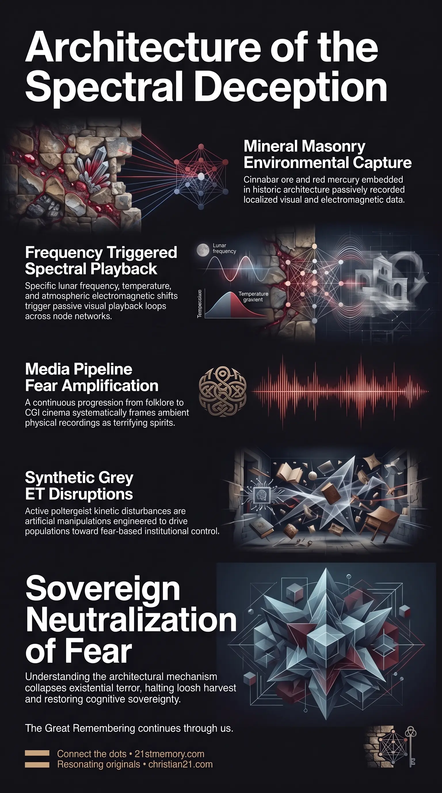

Ghosts Are Stone Recordings Harvesting Fear
Ghosts Are Stone Recordings Harvesting Fear — Visual apparitions are residual data playbacks stored in mineral architecture and used to harvest fear.

Ghosts Are Stone Recordings Harvesting Fear — Visual apparitions are residual data playbacks stored in mineral architecture and used to harvest fear.

The Ghost Deception — A media apparatus recasts environmental recordings and Grey ET interventions as disincarnate spirits.
Ghost Stories represent a weaponised narrative and technological deception deployed to hijack human perception, validate the illusion of death, and systematically extract emotional energetic yield. Rather than reflecting disincarnate human souls trapped in earthly limbo, physical Apparitions observed in historical structures are passive localized data playbacks. These visual phenomena were etched into the physical fabric of cathedrals, churches, and stately homes via high-energy mineral elements such as Cinnabar Ore and Red Mercury incorporated into Tartarian Technology.
The systematic exploitation of these residual recordings relies on Lunar Frequency transmissions and a orchestrated media apparatus. By evolving narrative delivery from traditional folklore and radio plays to modern investigative broadcasts like Most Haunted and photorealistic CGI Hauntings, parasitic custodians manipulate the human imagination through Angstrom-Level Colonisation Tactics. This continuous cultural reinforcement transforms accidental environmental playbacks and artificial Grey ET interventions into a self-sustaining engine for the Fear of Death, generating massive quantities of Loosh Energy while securing massive financial revenue for ruling bloodlines.
Visual hauntings and spectral sightings are not disincarnate human consciousnesses wandering the physical plane. The primary physical mechanism behind historical ghost sightings is an unintentional environmental playback loop stored within mineral-dense architecture. Built upon energetic grid intersections, historical stone structures containing mineral catalysts continuously captured environmental impressions that play back when ambient conditions align.
The human capacity to imagine was systematically weaponised by translating these rare technical anomalies into overarching cultural mythologies. Parasitic controllers recognized that validating ghosts provided direct confirmation of mortal death, instilling an existential terror that subjugates true souls. By establishing cultural touchstones through media channels, the population was guided to draw flawed, fear-inducing conclusions from natural technological remnants.
Active supernatural disturbances are categorized into two distinct mechanisms: passive historical recordings and active artificial manipulations. While localized spectral loops stem from decaying atmospheric technology, poltergeist phenomena are intentionally produced by Grey ET entities. This tactical dual-layer approach ensures that both passive environmental oddities and active aggressive disruptions serve to enforce psychological subjugation and spiritual disorientation.
The foundational hardware of passive spectral hauntings is embedded directly in historical masonry. Cathedrals, churches, and stately homes were constructed on primary Nodes that intersect planetary Ley Lines, where localized electromagnetic energy is naturally amplified. Within these energetic focal points, builders incorporated Cinnabar Ore—the fabled Philosopher's Stone—and Red Mercury.
These highly energetic substances acted as ambient recording media, capturing visual and environmental data during historical events. Red Mercury was deployed within architectural Spire Balls to capture atmospheric Aetheric Energy and couple it with the Lattice Membrane Energy of the ground plane. This network relied on Time-Phase Conjugated Mirrors (TPC Mirrors) to maintain phase coherence and project visual data across the localized node field.
The manifestation of a visual apparition—such as an image appearing to run through a solid wall—is governed by precise environmental variables rather than spiritual intent. The duration and movement of the projection depend on the Exposure Time of the original recorded event. A successful visual playback requires the alignment of several key physical parameters:
Lunar Frequency: The overarching atmospheric modulation set by the Moon's phase and electromagnetic output.
Ambient Temperature: Local thermal thresholds that alter the conductive state of structural masonry.
Electromagnetic Activity: Localized atmospheric charges, such as those generated during electrical storms or grid shifts.
When these parameters converge, stored data in the Cinnabar Ore plays back through the node's amplified field. Because the Lunar Frequency shifted out of resonance following atmospheric resetting events, visual projections lost their original clarity, definition, and acoustic output, resulting in the shadowy, transient apparitions recorded in modern times.
To weaponise these technological leftovers, parasitic controllers instituted a multi-stage media apparatus under MK-Ultra Craft tactics. This system systematically converted raw physical anomalies into structured cultural fear through a deliberate sequence of media formats:
Printed Folklore and Eyewitness Testimony: Handwritten and published ghost stories circulated by trusted community figures to establish baseline credibility.
Radio Broadcasts: Auditory dramatizations that utilized sound scoring to trigger internal terror responses.
Black-and-White and Colour Cinema: Early film productions that provided standardized visual templates for supernatural entities.
Investigative Television Broadcasts: The rise of the Most Haunted genre, which framed environmental fluctuations as active demonological or spectral hauntings.
Hollywood CGI Realism: Modern cinematic productions utilizing advanced computer graphics to produce hyper-realistic horror imagery.
This spectrum of entertainment acts as cognitive command prompts, conditioning human minds to accept the illusion of death and generate sustained emotional distress.
Distinct from passive architectural recordings, active poltergeist activity is an artificial manifestation orchestrated by Grey ETs. These entities generate physical kinetic disruptions, acoustic anomalies, and object displacements to induce acute psychological panic. The strategic objective of this synthetic harassment is to drive frightened populations toward Counterfeit Religion, creating structured institutional channels that organize human belief and provoke religious conflicts for corporate and energetic exploitation.
The phenomenon of Ghost Stories is directly linked to the broader infrastructure of human perception control. By weaponising human imagination through Angstrom-Level Colonisation Tactics, parasitic controllers ensure that natural curiosity regarding multidimensional existence is redirected into fear-based paradigms. The maintenance of this deception relies on preserving specific remnants of Tartarian Technology while suppressing its true wireless and aetheric energy functions.
Economically and energetically, the ghost narrative feeds directly into the global parasitic harvest. The production of supernatural entertainment yields billions of dollars in commercial revenue for bloodline-owned media conglomerates. Simultaneously, the pervasive fear generated by ghost stories and horror media releases massive volumes of Loosh Energy, which feeds parasitic entities and sustains the operational inversion of the physical realm.
Recognizing the true nature of Ghost Stories dismantles a primary pillar of psychological enslavement. Understanding that visual apparitions are merely environmental data playbacks stored in Cinnabar Ore and mediated by Lunar Frequency eliminates the existential terror associated with death and hauntings.
By identifying the media progression from Most Haunted to CGI Hauntings as an intentional delivery system, individuals can neutralize the external conditioning that hijacks human imagination. Decoupling perception from these artificial prompts halts the generation of Loosh Energy, collapses the illusion of mortal containment, and restores cognitive sovereignty.
This topic is free to share. Support the archive →